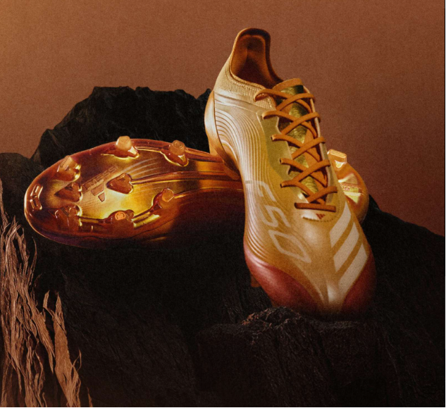
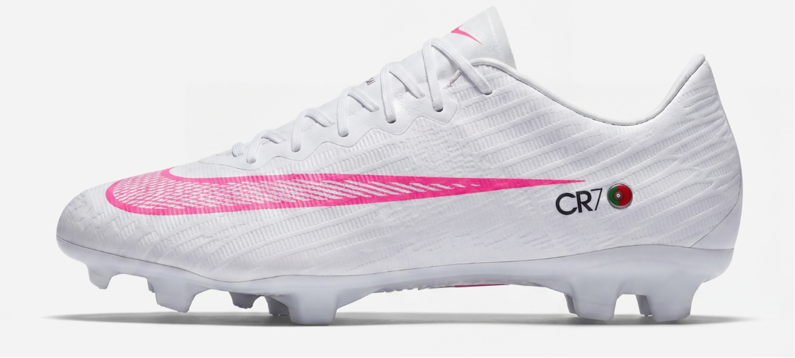
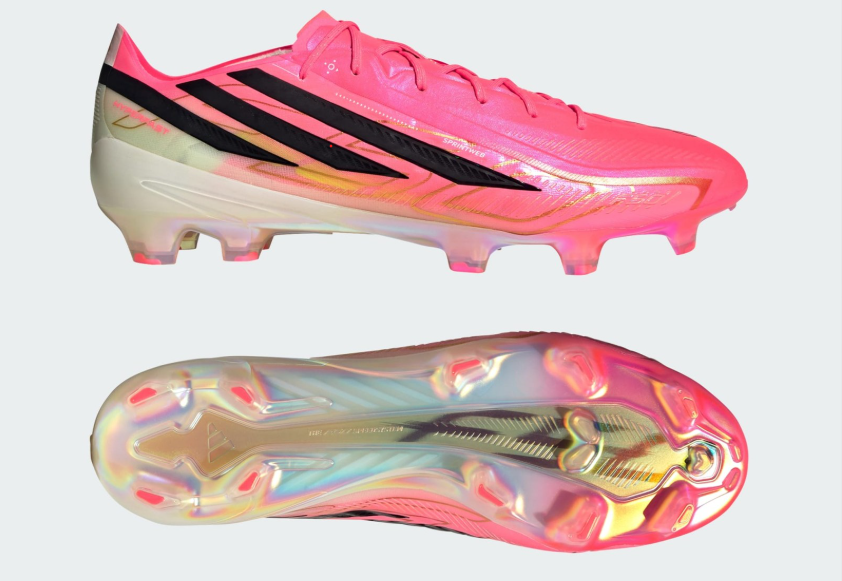

Camiseta de la Primera Equipación de Estados Unidos 2026.
Unidos en rayas. Un símbolo de la diversidad tanto del equipo como del país, la camiseta local de los EE.UU. presenta rayas onduladas y degradadas, haciendo referencia a un equipo unido en movimiento y progreso.
Precio: $100 USD
Camiseta de la Primera Equipación Auténtica de México 2026.
Diseñada en el espíritu de celebración, la Camiseta Auténtica Mexico 26 Home está hecha para quienes son ruidosos, leales y apasionados por México. Enfriamiento Avanzado. La ingeniería superior y los materiales avanzados se unen para un rendimiento fresco, seco y sin distracciones.
Precio: $150 USD
Camiseta de la Primera Equipación de Canadá 2026.
Icono. Reinventado. Una celebración de la rica diversidad de Canadá, esta camiseta roja de dos tonos une un mosaico de la icónica hoja de arce para una declaración refinada y audaz de confianza en el campo.
Precio: $100 USD
Camiseta de la Primera Equipación Auténtica Argentina 2026.
El Jersey Auténtico Argentina 26 Home une la herencia del fútbol con un diseño innovador. Marcando la primera aparición de la tercera estrella de los ganadores de la Copa Mundial de Argentina, honra el legado del equipo y su identidad sin temor. Elaborado en jacquard de punto con un ajuste delgado y de rendimiento, está construido para moverse con precisión.
Precio: $180 USD
Camiseta de la Primera Equipación de Brasil 2026.
El icónico amarillo canario regresa a la única camiseta en el mundo con cinco estrellas sobre el escudo. Un motivo de celebración para los brasileños. Para todos los demás, una advertencia.
Precio: $100 USD
Camiseta de la Primera Equipación Auténtica de España 2026.
La camiseta auténtica de local Spain 26 es un tributo a la elegancia y la pasión del fútbol español. Inspirada en los colores vibrantes de la bandera española, esta camiseta está diseñada para hacer una declaración tanto en el campo como fuera de él. Incorpora la tecnología Climacool+ de adidas.
Precio: $150 USD
Camiseta de la Primera Equipación Auténtica de Francia 2026.
Roba el momento. Una celebración del patrimonio multicultural de Francia, esta icónica camiseta azul francesa presenta una impresión "FFF" unificadora y detalles metálicos dinámicos para futbolistas dispuestos a lograr la victoria más audaz hasta ahora.
Precio: $180 USD
Camiseta de la Primera Equipación Auténtica de Alemania 2026.
Cuando se trata de fútbol, la Camiseta Auténtica Home Germany 26 es un símbolo del patrimonio e innovación. Inspirada en momentos icónicos, esta camiseta está diseñada para ser el icono de mañana. Esta camiseta está confeccionada con tecnología Climacool+.
Precio: $150 USD
Balón Trionda Pro del Mundial 26.
Un espectáculo visto por primera vez en lugares deportivos en las Américas, la icónica "la ola" onda inspira el diseño fluido de cuatro paneles de este balón adidas Trionda Pro. El balón oficial de la Copa Mundial de la FIFA 26™, tiene una superficie sin costuras con una textura llamativa y debossing estratégicamente colocado para una precisión óptima y estabilidad en vuelo. Los colores vibrantes y los símbolos nacionales audaces representan los tres países anfitriones del torneo.
Precio: $170 USD
Botas exclusivas de Messi Adidas F50 2026 «Hora Dorada».
Diseño de las botas: Las nuevas botas Adidas Messi F50 2026 «Hora Dorada» tienen un diseño degradado en tonos naranja y dorado, evocando una puesta de sol. Inspiración en el Barcelona: La combinación de colores de las botas recuerda a la camiseta visitante del Barcelona de la temporada 2006-2007, vinculando la historia de Messi con el club.
Precio: $400 USD
Botas exclusivas Nike Mercurial Cristiano Ronaldo .
Diseño personalizado: Las botas presentan un diseño en blanco y rosa con detalles personalizados como los nombres de sus hijas y su marca CR7. Embajador principal de Nike: La aparición de estas botas subraya la relación especial entre Ronaldo y Nike, confirmando su regreso como embajador principal de la marca.
Precio: $350 USD
Botas Adidas F50 Hyperfast .
Toda la colección utiliza un llamativo rojo brillante (casi rosa neón/rojo) como color base predominante en los tres modelos principales. Las botas cuentan con elegantes detalles en plata metalizada, dorado y negro para las Tres Rayas y el logotipo específico de cada modelo. Sin embargo, el detalle más especial y exclusivo de esta colección para el torneo se encuentra en la parte trasera. El logotipo del trofeo de la Copa del Mundo de la FIFA, en dorado metalizado brillante.
Precio: $300 USD